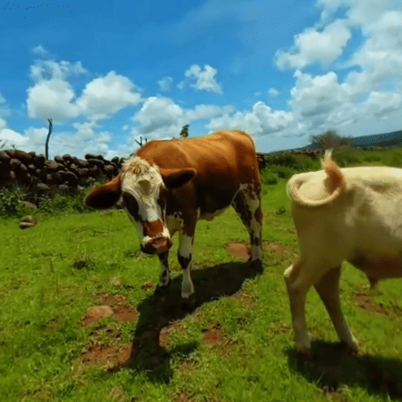

Learning to understand dynamic 3D scenes from imagery is crucial for applications ranging from robotics to scene reconstruction. Yet, unlike other problems where large-scale supervised training has enabled rapid progress, directly supervising methods for recovering 3D motion remains challenging due to the fundamental difficulty of obtaining ground truth annotations. We present a system for mining high-quality 4D reconstructions from internet stereoscopic, wide-angle videos. Our system fuses and filters the outputs of camera pose estimation, stereo depth estimation, and temporal tracking methods into high-quality dynamic 3D reconstructions. We use this method to generate large-scale data in the form of world-consistent, pseudo-metric 3D point clouds with long-term motion trajectories. We demonstrate the utility of this data by training a variant of DUSt3R to predict structure and 3D motion from real-world image pairs, showing that training on our reconstructed data enables generalization to diverse real-world scenes.
Stereoscopic fisheye videos from the internet are an untapped source of high-quality 4D data: (1) there are hundreds of thousands of them, and (2) since they're designed to capture immersive VR experiences, they have wide field-of-view stereo imagery with a standardized stereo baseline, precisely the kind of information that's useful in reconstructing pseudo-metric 4D scenes. These videos contain a pretty even spread of what we might see in everyday life—some examples are shown here:
We process these videos with a careful combination of state-of-the-art methods for (1) stereo depth estimation, (2) 2D point tracking, as well as (3) a stereo structure-from-motion system optimized for dynamic stereo videos. From these methods, we can extract per-frame camera poses, per-pixel pseudo-metric depth from stereo disparity, and long-term 2D point tracks.
We then fuse these quantities into 4D reconstructions, by lifting the 2D tracks into 3D with their depth, and aligning all the scene content by compensating for the known camera motion. This results in temporally consistent, high-quality dynamic reconstructions, with long-term correspondence over time.
This gives us pretty reasonable 4D scenes, but there's still work left to be done. The precision of stereo depth predictions may be limited by the content of the scene (e.g., distant objects seen with small parallax may have a large variance of possible depth values—and can therefore vary signifcantly from one frame to another). This results in jittery or noisy 3D tracks. To compensate for this, we additionally perform an optimization process over the 3D trajectories that removes this noise.
To validate that our dataset is useful for learning about the structure and motion of real-world scenes, we use it to train a variant of DUSt3R. DUSt3R usually takes as input a pair of images, and predicts a 3D point for each pixel in both images (in a shared coordinate frame)—but it fails when the scene is dynamic, e.g., when there is scene motion between the two images. This comes largely as a consequence of the fact that DUSt3R is trained on static data (since there aren't very many sources of ground-truth dynamic 3D scenes). We extend DUSt3R by adding a notion of time—into a model that we call DynaDUSt3R, and train it on our Stereo4D dataset. Given a pair of frames from any real-world video, DynaDUSt3R predicts per-pixel 3D points for each frame, as well as the 3D motion trajectories that connect them in time.
Click on the different examples below to see predicted shape and motion from various image pairs.
| Input image pair | Reconstruction | |
|---|---|---|
|  | ||
@inproceedings{jin2024_Stereo4d,
title = {Stereo4D: Learning How Things Move in 3D from Internet Stereo Videos},
author = {Jin, Linyi and Tucker, Richard and Li, Zhengqi and Fouhey, David and Snavely, Noah and Holynski, Aleksander},
year = {2024}
}